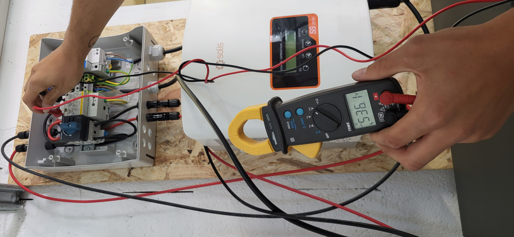
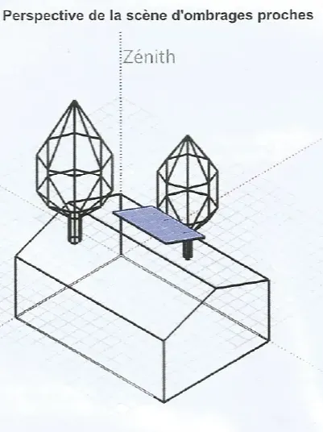

Verifier
Ressources
Les ressources utilisées pour cette compétence sont :
Ressources logicielles :
- Les logiciels Eagle et Micro cap où étaient réalisé les différents circuits électronique
- Des logiciels de calculs et de traitement de texte tel que Excel et Word pour répondre aux différentes questions pour les choix de composants et pour réaliser nos comptes-rendus.
- Le logiciel Quartus pour apprendre à programmer en VHDL.
Ressources théoriques :
- L'électronique en s'appuyant sur les cours de systèmes électroniques pour faire les schémas, les notions sur chaque composant, les théorèmes ainsi que les formules afin de faire tous les calculs nécessaires.
- Les cours de système d'information numérique pour établir des tables de vérités, des fonctions logiques, et apprendre à utiliser des portes logiques. Ainsi que pour effectuer des calculs en binaire.
- Les mathématiques pour effectuer tout type de calcul.
- L'anglais pour comprendre les documentations techniques des composants utilisés.
- Le cours ENER1 sur les chapitres: Schéma d'électrotechnique, L'appareillage électrotechnique, Appareils de mesure électrique et leur utilisation.
Ressources matérielles :
- L'utilisation de matériel électronique, comme des fils, des résistances et autres matériels de l'IUT. Ainsi que mon matériel personnel, pince coupante, pince plate et pince à dénuder.
- Le matériel informatique.
- Carte Altéra DE1.
Composantes essentielles
CE1: En tenant compte des spécificités matérielles, règlementaires et contextuelles
CE2: En mettant en œuvre un plan d'essai et d'évaluations, dans une visée d'analyse qualitative et corrective
SAé: câblage
Composantes essentielles utilisées :
- En tenant compte des spécificités matérielles, règlementaires et contextuelles car pour avoir une bonne lisibilité, nous devions minimiser le nombre de câbles. De plus, la partie commande du montage devait être câblée en rouge et la partie puissance en noir.
- En mettant en œuvre un plan d’essais et d ’évaluations, dans une visée d’analyse qualitative et corrective car après chaque réalisation de montage, il fallait effectuer une vérification du système afin de voir son bon fonctionnement. Si le montage avait un ou plusieurs défaut(s), on devait effectuer une procédure de vérification afin de localiser la panne. Une fois la vérification correcte et le montage fonctionnel, le professeur a lui même créé
Apprentissages critiques :
Localisation et réparation de panne :
- Durant cette SAé, nous avons appris à appliquer une procédure de vérification en suivant un protocole fourni. Ce protocole consistait à suivre une liste de vérification qui permettait, en testant fil à fil, d'identifier et de décrire une panne.
- Appliquer une procédure d'essai
- Identifier un dysfonctionnement
- Décrire les effets d'un dysfonctionnement
Nous avons donc acquis les apprentissages suivants :
Exemple de montage :

Déroulement :
Au fur à mesure de la SAé, avec mon binôme, nous avons progressé. Nous avons appris à comprendre et à réaliser des montages, que ce soit lors de la réalisation de nos schémas d'implantations ou bien lors de la préparation aux séances.
Notre binôme est très complémentaire et investi ce qui a permis d'obtenir une très bonne note.
SAé : Chenillard
APC1 :

La fiche de vérification joue un double rôle : elle sert de fiche d’évaluation, que ce soit pour nous-mêmes, pour un autre binôme de travail que nous évaluons, ou pour le professeur supervisant notre projet. De plus, elle constitue un outil précieux pour identifier les problèmes potentiels lors des tests de notre programme.
APC2 :

SAé : Alimentation PV
La SAé Alimentation Photovoltaïque est un projet qui a plusieurs objectifs :
- Concevoir un prototype à partir d'un cahier des charges (Compétence C1)
- Mettre en place un protocole de test et de mesure afin de valider le fonctionnement global de ce prototype. (Compétence C2)- Produire une analyse fonctionnelle d’une partie du système
- Rédiger un dossier de conception et de fabrication
- Identifier un dysfonctionnement
- Décrire les effets d'un dysfonctionnement
APC1 :
Équipements Nécessaires :
- Multimètre numérique
- Alimentation électrique réglable
- Outils de câblage et de connexion
Procédure de Maintenance
- Examiner toutes les soudures sous une bonne lumière pour détecter d'éventuels courts-circuits.
- Utiliser un multimètre en mode continuité pour tester l'intégrité des soudures.
- Contrôler visuellement les composants pour tout signe de dommage ou de surchauffe.
- Avant de mettre le circuit sous tension, mesurer la tension de sortie de la diode Zener pour s'assurer qu'elle régule correctement à 15V.
- Mettre la carte sous tension sans l’oscillateur NE555 pour vérifier le bon fonctionnement des autres composants.
- 5. Vérification de l'Oscillateur :
- Insérer le circuit intégré NE555 et mesurer le rapport cyclique de sortie pour confirmer le bon fonctionnement de l'oscillateur. Il doit être compris entre 16% et 55% à 16V du panneau solaire ou 14% et 60% à 22V du panneau solaire.
- 6. Test de la Partie Commande et de la Partie Puissance :
- Connecter la partie commande à la partie puissance.
- Vérifier que la tension de sortie du hacheur correspond aux spécifications (5V ou 7.5V) pour une tension d'entrée de P1 comprise entre 16V et 22V.
APC2

SAé Robot
Je n'ai pas les documents et les ressources nécessaires car nous avons dû terminer rapidement le projet en raison du concours robots. vous pouvez d'ailleures trouver la presentation du projet concours robot directement ⇨ ICI ⇦
Intermédiaire B.U.T. 2 Mettre en place un protocole de tests pour valider le fonctionnement d’un système
Apprentissages critiques
- APC1 : Identifier les tests et mesures à mettre en place pour valider le fonctionnement d’un système.
- APC2 : Certifier le fonctionnement d’un nouvel équipement industriel.
Stage C.O.A
Ce stage s’inscrit dans le cadre de la validation de notre deuxième année de BUT GEII. Il a pour objectif principal de nous confronter au monde professionnel tout en consolidant nos compétences techniques et théoriques. C’est l’occasion d’appliquer sur le terrain les notions abordées en cours et de découvrir les réalités du métier.
APC1 :
J’ai effectué des mesures de tension (en boucle ouverte, phase/neutre, entre polarités et la terre), de résistance de terre, et de continuité électrique lors des interventions de maintenance.

APC2 :
J’ai participé à l’analyse d’un rapport PVsyst, afin de vérifier la rentabilité et la cohérence d’un projet d’installation.
